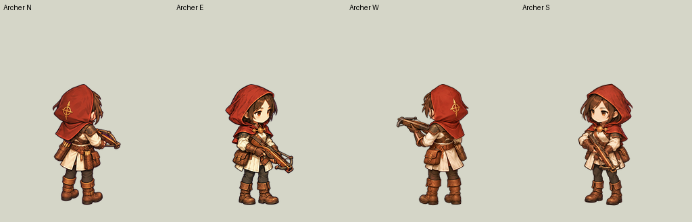
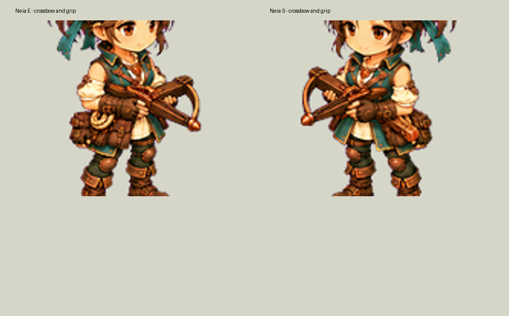
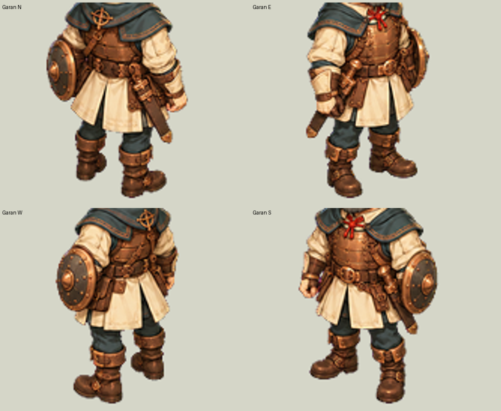
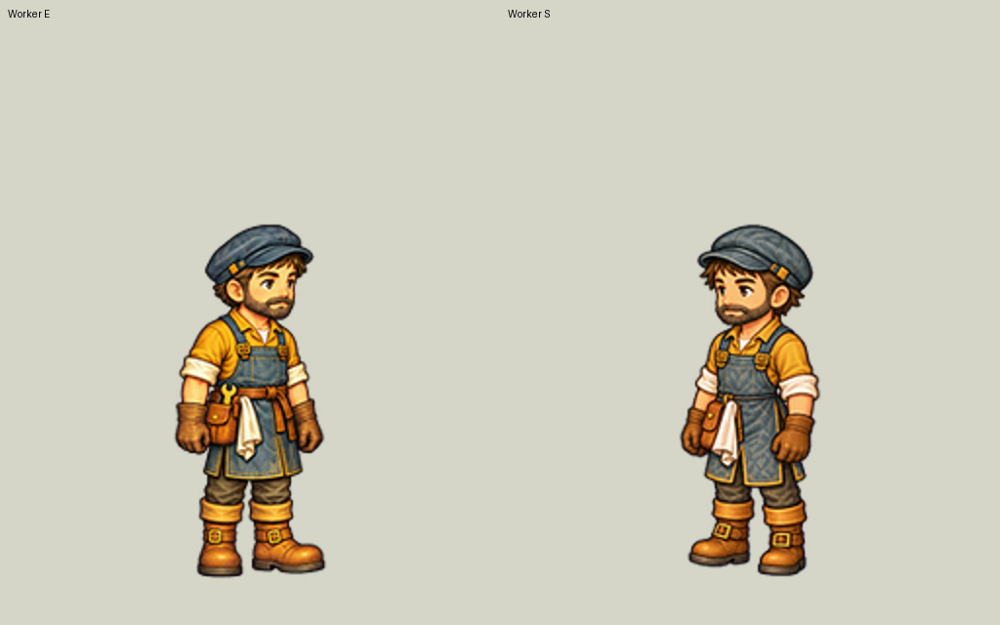

現在は対象の洗い出しだけです。画像修正・生成・追加課金は行っていません。
この一覧は暫定です。腰・膝は画像ごとの実測が未完了で、保留項目を「問題なし」とは認定していません。
| キャラ | 方向 | 状態 | 確認した違い・要確認事項 |
|---|---|---|---|
| リセ | S | 修正候補 | Eに対する顔・髪のシルエット、頭の幅、頭身の差。 |
| ガラン | N・E・W・S | 装備の照合・統一対象 | 鞘の太さ・先端金具・吊り方が不統一。Sでは鞘が盾側、Eでは盾の反対側。Wは隠れ方も含め装着位置を照合。 |
| ネイア | E・S | 修正候補 | 頭身に加え、クロスボウの構える高さ・角度・手の位置を照合し統一。N/Wの持ち方も併せて確認。 |
| セナ | S | 修正候補 | Eに対する顔つき・頭の幅・頭身の差。Wの頭部比率は要確認。 |
| イヴァ | S | 修正候補 | Eに対する顔の輪郭・目の比率と頭身、衣装細部の描かれ方の差。 |
| ダニ | S | 修正候補 | Eに対する顔つき・髪束・頭身の差。バッグとストラップは視点による隠れ方と形状差を分けて照合。 |
| ガード | 未確定 | 保留・未確定 | 現時点で明確なデザイン不一致を特定していない。腰・膝を含む寸法の実測は未完了。「問題なし」と認定したものではない。 |
| アーチャー | W | 構えの統一対象 | Wは弓を肩の高さで構え、他方向の低い保持姿勢と異なる。武器の高さ・角度・両手と肩の位置を統一。 |
| Vesk | 未確定 | 保留・未確定 | 他キャラとの頭身差はあるが、方向間の明確なデザイン不一致は未確定。腰・膝を含む実測は未完了。 |
| トマ | W | 色の修正候補 | Eに対して髪が明るい橙色、上着とズボンの色も異なる。 |
| 労働者 | S | E/Sのデザイン統一対象 | E/Sで顔つき・帽子の形に差。特にエプロンのステッチと腰ベルトの構造が異なる。Eを仮の比較基準とする。 |
| 代表者 | W | 色の修正候補 | Eに対して髪・上着・ズボン・靴の基本色が異なる。 |



